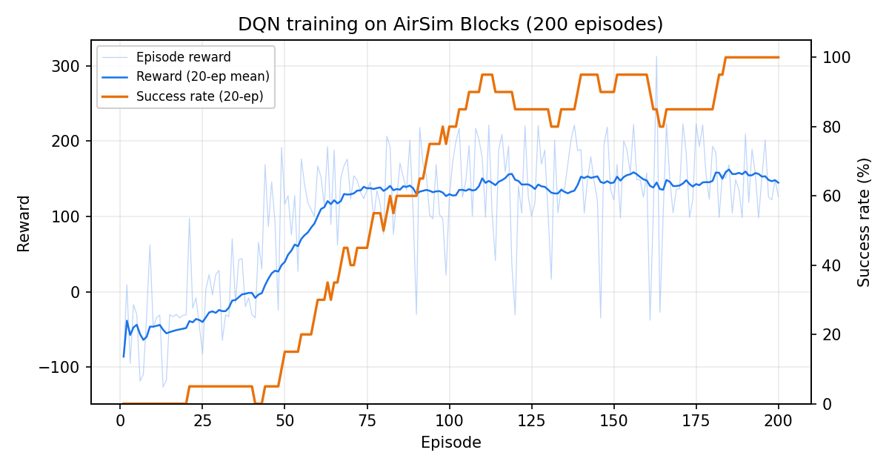
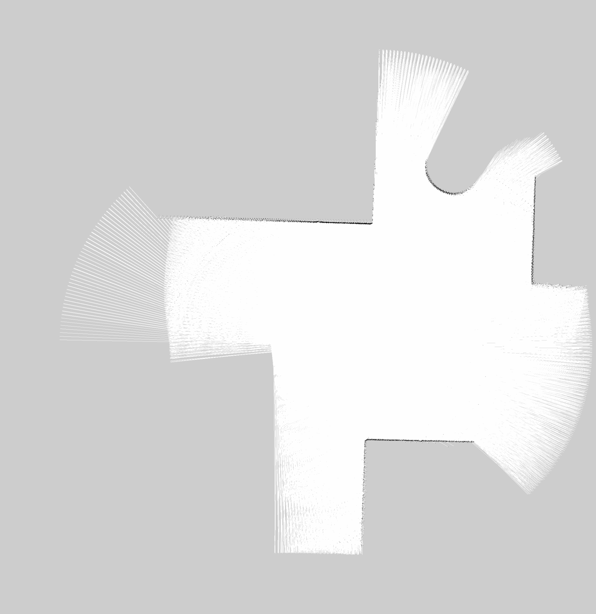

基于深度强化学习的无人机雷达建图与端到端飞行控制
本模块在 AirSim + ROS Noetic 上实现四类无人机能力：键盘遥控、激光雷达感知与 DQN 导航、SLAM 建图与导航同步、图像端到端 DQN 控制。
与监督学习路线不同，本模块的控制器由深度强化学习训练得到：智能体在仿真场景中 自行探索，以“接近目标、朝向对齐、避开障碍”为奖励信号优化策略，不需要人工标注 专家轨迹。
1 运行环境
| 项目 | 版本 |
|---|---|
| 仿真器 | AirSim 1.8.1（Blocks 预编译场景，Windows） |
| 操作系统 | Ubuntu 20.04（WSL2） |
| ROS | Noetic |
| Python | 3.8 |
| 依赖 | numpy、torch 1.13、opencv-python、msgpack-rpc-python |
AirSim 与 ROS 之间通过 msgpack-rpc（默认 41451 端口）通信。WSL2 下需要把
airsim_ip 设为 Windows 主机在 WSL 网段里的地址，即 /proc/net/route 中的网关地址。
启动 Blocks 时必须用 -settings=<本模块 config/settings.json 的绝对路径>
显式加载无人机配置，并确认 listVehicles() 包含 Drone_1；仅把配置文件放在
模块目录不会被 AirSim 自动读取。若误用默认汽车配置，相机与起飞链路无法工作。
编译与运行：
cd ~/catkin_ws
cp -r <模块目录> src/
catkin_make
source devel/setup.bash
# 任务 1
roslaunch uav_lidar_dqn_navigation main.launch mode:=teleop
# 任务 2
roslaunch uav_lidar_dqn_navigation main.launch mode:=dqn
# 任务 3
roslaunch uav_lidar_dqn_navigation main.launch mode:=slam
# 任务 4
roslaunch uav_lidar_dqn_navigation main.launch mode:=e2e
2 系统架构
2.1 坐标系
AirSim 使用 NED（北-东-地），ROS 使用 ENU（东-北-天）。桥接节点在发布里程计时 做如下换算：
偏航角满足 $\psi_{\text{ENU}} = \pi/2 - \psi_{\text{NED}}$。
控制回路由 ROS 的机体系速度换算到 AirSim 的世界系速度：
偏航角速度方向两套坐标系相反，桥接节点下发前取负号。
2.2 话题
| 话题 | 类型 | 说明 |
|---|---|---|
/drone/cmd_vel |
geometry_msgs/Twist | 机体系速度指令 |
/drone/odom |
nav_msgs/Odometry | ENU 位姿与速度 |
/drone/state |
std_msgs/Float32MultiArray | NED 原始状态 |
/drone/lidar/scan |
sensor_msgs/LaserScan | 180° 累积扫描 |
/drone/lidar/sectors |
std_msgs/Float32MultiArray | 24 维扇区距离 |
/drone/image_raw |
sensor_msgs/Image | 前置相机图像 |
/drone/goal |
geometry_msgs/PointStamped | NED 目标点 |
3 任务一：键盘遥控
终端按键：W/S 前后、A/D 转向、Q/E 升降、1/2/3 切换 1.0/2.0/4.0 m/s 档位、 空格悬停、T/L 起飞降落、ESC 退出。节点实时统计巡航距离并显示当前速度。
实测：2.0 m/s 前进指令下位移 13.4 m，高度波动约 ±0.1 m。

4 任务二：雷达感知 + DQN 导航
4.1 状态设计
激光雷达水平视场 ±90°，16 线，量程 40 m。把点云按方位分成 24 个扇区，每扇区取 最近点距离并按量程归一化：
再拼接目标相对量、机体系速度与上一步动作，得到 32 维状态：
其中 $d_g$ 为目标水平距离（按 40 m 归一化），$\theta_g$ 为目标方位角与机头夹角， $\Delta z_g$ 为高度差（按 8 m 归一化）。
4.2 动作空间
6 个离散动作，偏航正方向按 ROS 约定为左转：
| 编号 | 动作 | 前进速度 | 偏航角速度 |
|---|---|---|---|
| 0 | 悬停 | 0 | 0 |
| 1 | 直行 | 3.0 m/s | 0 |
| 2 | 左前 | 1.5 m/s | +0.9 rad/s |
| 3 | 右前 | 1.5 m/s | −0.9 rad/s |
| 4 | 原地左转 | 0 | +1.0 rad/s |
| 5 | 原地右转 | 0 | −1.0 rad/s |
4.3 奖励函数
单步奖励由四部分组成：
其中 $o_t$ 为前向最近障碍距离。到达目标（$d < 1.5$ m）额外奖励 60，碰撞扣 30， 出界扣 20，并结束回合。障碍进入 0.5 m 以内按“近失事故”终止并扣 20——训练时 没有部署侧的安全层，若不加这一项，策略会学到“贴着墙继续前进也不会立刻出事”。
4.4 Dueling Double DQN
网络采用 Dueling 结构，把状态价值与动作优势解耦：
目标值用 Double DQN 计算，动作由在线网络选择、价值由目标网络估计：
损失函数为 Huber 损失：
训练流程：
- 每个回合从可通行点表中随机选起点与目标（8~30 m），摆放到 4 m 高度
- 按 $\varepsilon$-greedy 选择动作，经桥接同样的坐标换算下发速度
- 计算奖励，写入经验回放池，随机抽样更新网络
- 每 500 步同步目标网络；
dqn_nav.pt始终保存当前最佳权重（近 20 回合成功 率最高），dqn_nav_last.pt另存最后一回合，日志逐回合写入models/train_nav_log.csv
4.5 训练结果
200 回合训练，$\varepsilon$ 从 1.0 线性衰减到 0.05：
| 指标 | 数值 |
|---|---|
| 整体成功率（200 回合） | 62.5% |
| 末 50 回合成功率 | 94% |
| 末 20 回合成功率 | 100% |
| 碰撞次数（全程） | 28 |
| 首次成功 | 第 21 回合 |
| 到达判定 | 距目标 < 1.5 m |
| 训练时长 | 约 70 分钟（CPU） |
逐回合数据见 models/train_nav_log.csv；dqn_nav.pt 与 dqn_nav_best.pt
的 SHA-256 相同，交付权重就是最佳权重。

部署实测：目标 (15, 10)，从原点起飞后到达 (14.77, 9.21)，误差 0.83 m。

4.6 部署安全层
DQN 输出的是“朝目标飞”的偏好；障碍进入训练分布外的近距范围（例如 1 m 内）时，
Q 值在动作之间的差距会变小，单靠网络可能仍然选直行。部署节点在动作下发前加
一层 safety_shield.py：
| 条件 | 处理 |
|---|---|
| 正前方 1.0 m 内有障碍 | 屏蔽直行、左前、右前 |
| 单侧 0.9 m 内有障碍 | 屏蔽该侧斜向动作 |
| 前方扇区 0.35 m 内 | 向较空旷一侧原地转向，禁止前进 |
屏蔽后在剩余动作里取 Q 最大；近障恢复控制器会覆盖悬停并向空旷一侧转向， 前方重新通畅后短暂前进。到达目标 1.5 m 内保持悬停。几何与动作逻辑有离线单测， 完整近障行为仍须在 AirSim 中核验。
5 任务三：建图与导航同步
5.1 TF 链与扫描
TF 链为 map → odom → base_link → laser。桥接节点发布 odom → base_link，
静态变换发布 base_link → laser（雷达装在机体中心下方 0.5 m）。扫描帧独立命名
为 laser，避免与 base_link 形成自环。
AirSim 旋转雷达单帧只覆盖一小段方位，扫描节点先按采样位姿补偿运动， 再累积 1 秒点云拼成 180° LaserScan； 控制用的扇区特征仍取单帧，保证与训练分布一致。
扫描角度按采样点计算：angle_min = -90°、angle_increment = 1°，180 个点的
最后一个角度是 angle_min + (bins - 1) * angle_increment = +89°。写成 +90°
会让按 (max-min)/increment + 1 计算的消费者得到 181 个点。
ranges 的顺序同样按 ROS 约定生成：ranges[0] 对应 angle_min（-90°，机身
右侧），最后一个元素对应 angle_max。AirSim 的 atan2(y, x) 正角在右侧，
生成扫描时取负对齐 ROS 的“左正”，避免 gmapping 建出左右镜像的地图。
5.2 gmapping 参数
| 参数 | 值 |
|---|---|
| 分辨率 | 0.05 m/格 |
| 初始地图范围 | ±50 m；gmapping 运行中可扩展网格 |
| 粒子数 | 50 |
| maxUrange | 39 m |
| 更新阈值 | 0.2 m / 0.1 rad |
5.3 实验：hector_slam 与 gmapping 对比
旧实验曾观察到 hector 的扫描匹配跟丢，因此目前使用 gmapping。
2026-11-12 在 Blocks + WSL ROS Noetic 下重新运行，map_saver 从 /map
保存的地图为 2208×2272、0.05 m/格、5472 个占用格，预览中可见连续墙体。
uav_map.yaml 的原点为 (-50,-50)，保存后的边界约为 (60.4,63.6) m；
这说明网格已从初始 ±50 m 扩展，不能用启动时的边界推算最终像素尺寸。
旧地图的 1503 个占用格及早先描述的 5751 均不是本次结果。
5.4 建图航线
场景正前方约 25 m 处是一堵方块墙，直线飞行会撞墙。航线改为先沿墙横飞再转向：
(0,0) → (0,20) → (16,20)，导航速度降到 50%，保证粒子滤波有足够的扫描重叠。
航点节点在到达 (0,20) 的 1.5 m 范围后才发布 (16,20)。
同次运行日志记录了航点切换；第二航点附近运行中的状态为
(16.49,19.62)，水平误差约 0.62 m。maps/uav_map.yaml 指向无损 PNG，
已由 map_server 读回并核对尺寸和分辨率。


6 任务四：图像端到端 DQN
6.1 状态与网络
前置相机场景图转灰度并缩放到 84×84，归一化后作为卷积输入；再拼接 7 维辅助量 （目标相对量 4 维 + 机体系速度 3 维）。网络结构：
- 卷积：1→16（5×5，步长 2）→16→32（3×3，步长 2）→32→32（3×3，步长 1）
- 全连接：展平 + 7 维辅助量 →128
- Dueling 头：价值 1 维 + 优势 6 维
动作空间与任务 2 相同，奖励函数相同，训练流程复用同一套回合管理。端到端策略
用图像与 7 维辅助量决策，同次相机请求的深度图用于近障奖励；训练回合不再读取
雷达点云。--resume 按图像网络结构加载断点；从本地完整的 dqn_e2e_last.pt
可恢复 Adam 状态与更新步数，从半精度最佳权重续训则会重新初始化 Adam。
权重与日志约定同
任务 2：dqn_e2e.pt 为近 20 回合成功率最高的最佳权重，dqn_e2e_best.pt
显式保留一份最佳，dqn_e2e_last.pt 为最后一回合；逐回合日志写入
models/train_e2e_log.csv（含 success / collision / near_miss）。
6.2 当前部署验证
AirSim Blocks（显式加载本模块 config/settings.json）与 Ubuntu 20.04 / ROS Noetic
联跑时，RGB 图像、NED 原始状态、DQN 动作和速度指令均持续发布。先调用 AirSim
reset()，再从原点起飞，以 NED 坐标计算目标误差，记录 110 秒轨迹：
| 目标 (NED) | RGB 帧 / 动作数 | 110 秒终点 (NED) | 最近目标距离 / 终点距离 |
|---|---|---|---|
| (0, 12) | 1100 / 1059 | (0.48, 13.85) | 0.85 m / 1.91 m |
控制节点在水平误差 1.45 m 时记录“到达目标”并持续输出悬停；由于惯性，最终稳定
位置距目标 1.91 m。图像到控制指令的 ROS 链路与这次目标到达均已实测。
这条轨迹使用续训前的原始权重；从该权重真实续训 40 回合的逐回合记录见
src/air/uav_lidar_dqn_navigation/models/train_e2e_log.csv：18/40 回合到达，
最佳连续 20 回合 12/20（第 25 回合），末 20 回合 10/20，碰撞 2 次、近失 1 次。
交付权重为第 25 回合的最佳模型；不同场景下的部署到达率仍需另行复测。
换用交付权重重新运行 e2e.launch 后，ROS 在水平误差 1.33 m 时记录到达并
切换持续悬停；之后 110 秒仍收到图像和动作各 1100 帧，稳定位置约为
(0.40,13.91)，距目标 (0,12) 约 1.96 m。该观测窗口从到达后开始，
因此窗口内位移为零是预期的悬停结果。
 视觉策略使用图像与 7 维目标、速度辅助量；到点后悬停属于部署终止条件，不参与
到点前的 DQN 动作选择。
视觉策略使用图像与 7 维目标、速度辅助量；到点后悬停属于部署终止条件，不参与
到点前的 DQN 动作选择。
7 性能评价
| 项目 | 指标 |
|---|---|
| 键盘遥控 | 2 m/s 位移 13.4 m，高度波动 ±0.1 m |
| DQN 训练 | 末 50 / 末 20 回合成功率 94% / 100% |
| DQN 部署 | 到达误差 0.83 m |
| 建图 | 实机地图 2208×2272、0.05 m/格、占用格 5472 |
| 端到端 DQN | 原始权重在 (0,12) 实机到达；续训 40 回合最佳连续 20 回合成功率 60%，交付权重的多场景部署到达率待复测 |
8 常见问题
- 偏航方向反了：ROS 偏航正方向为左，AirSim 为顺时针，桥接节点下发前要取负； 否则策略原地左右摆动。
- 模型找不到：
rosrun时脚本位于devel/lib，模型路径要用rospkg按包目录定位。 - AirSim 会话不是线程安全：多个线程同时调用客户端会报
Existing exports of data，所有调用必须串行化。 - 退出前必须降落：先
landAsync再释放 API 控制，否则无人机自由落体。 - 雷达帧不能等于 base_frame：独立
laser帧 + 静态变换。 - 扫描帧间位移过大：建图时要降低飞行速度，否则粒子滤波/扫描匹配跟不上。
- 直线冲墙：场景正前方有墙，航线必须先横飞再转向，不能直接给墙后的目标点。
- 地图范围参数：
maxUrange小于实际量程会丢弃远处命中，地图出现大片空白。 - 仿真器长时间运行后状态异常：每轮完整测试前重启 Blocks。
.gitignore的*.TXT会误伤CMakeLists.txt：git add需要加-f。
9 大模型使用声明
本模块在开发过程中使用大模型辅助编写代码与文档，提交者对全部内容负责。